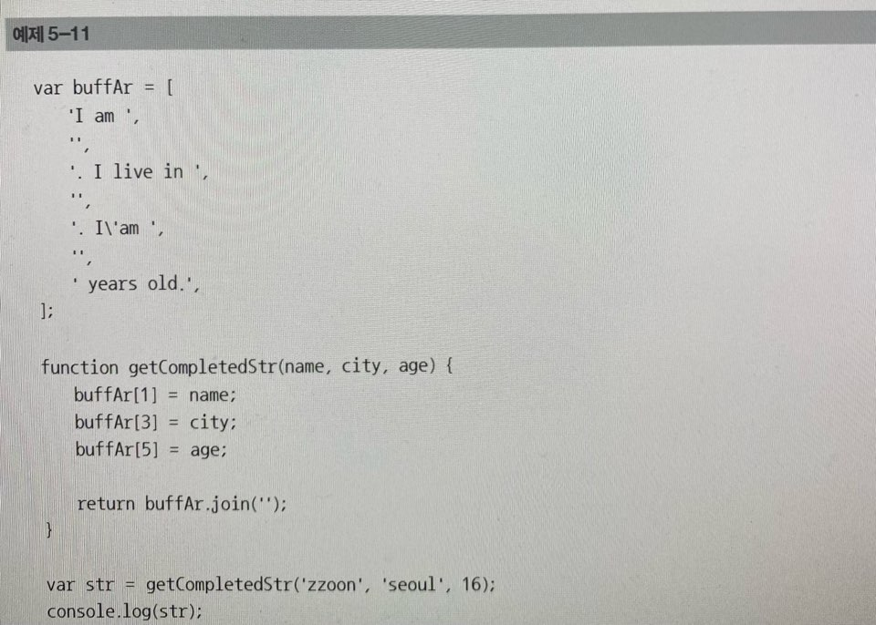
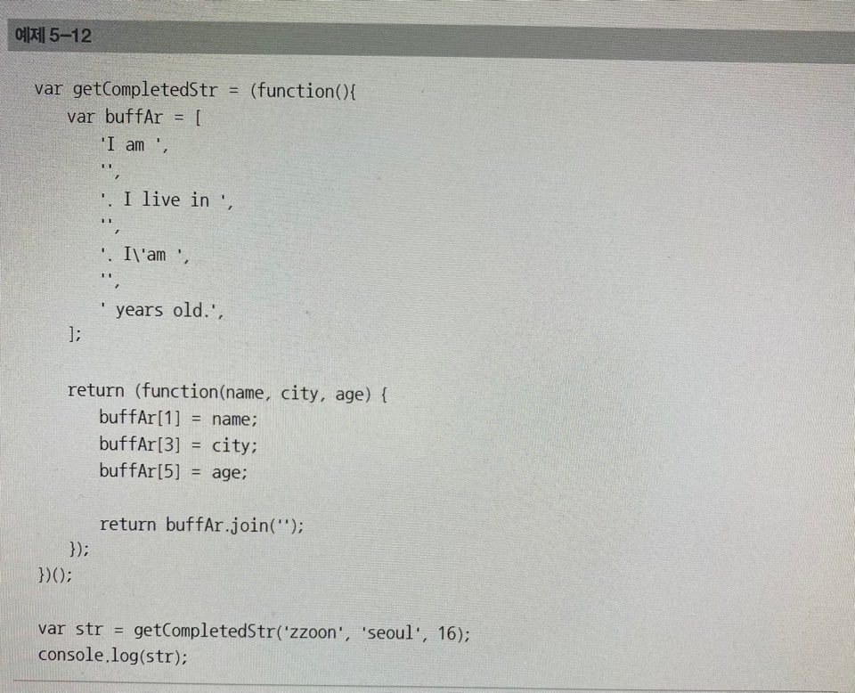
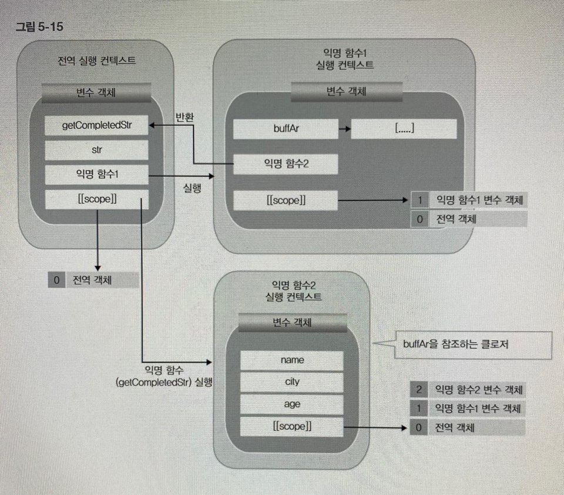

함수의 캡슐화
다음과 같은 함수를 작성한다고 가정해보자. "I am XXX. I linve in XXX. I'am XX years old" 라는 문장을 출력하는데, XX 부분은 사용자에게 인자로 입력 받아 값을 출력하는 함수 가장 먼저 생각할 수 있는 것은 앞 문장 템플릿을 전역 변수에 저장하고, 사용자의 입력을 받은후, 이 전역 변수에 접근하여 완성된 문장을 출력하는 방식으로 함수를 작성하는 것이다. 이 방식으로 구현하면 코드는 다음과 같다.

하지만 예제 5-11은 단점이 있다. 바로 buffAr이라는 배열은 전역 변수로서, 외부에 노출되어 있다는 점이다. 이는 다른 함수에서 이 배열에 쉽게 접근하여 값을 바꿀 수도 있고, 실수로 같은 이름의 변수를 만들어 버그가 생길 수도 있다. 이는 특히 다른코드와의 통합 혹은 이 코드를 라이브러리로 만들려고 할 때, 까다로운 문제를 방생시킬 가능성이 있다. 실제로 다른 사람이 사용할 라이브러리를 만들려고 하는 개발자는 이러한 충돌 가능성을 충분히 대비해서 라이브러리를 작성해야만 한다. 앞 예제의 경우, 클로저를 활용하여 buffAr을 추가적인 스코프에 넣고 사용하게 하면, 이 문제를 해결할 수 있다. 다음 예제 5-12를 보자.

예제 5-12에서 가장 먼저 주의해서 봐야할 점은 변수 getCompletedStr에 익명의 함수를 즉시 실행시켜 반환되는 함수를 할당하는 것이다. 이 반환되는 함수가 클로저가 되고, 이 클로저는 자유변수 buffAr을 스코프 체인에서 참조할 수 있다. 클로저에 있는 스코프 체인을 그림으로 그려보면 다음과 같다. 이와 같은 그림은 이제 많이 익숙해졌기를 바란다.
